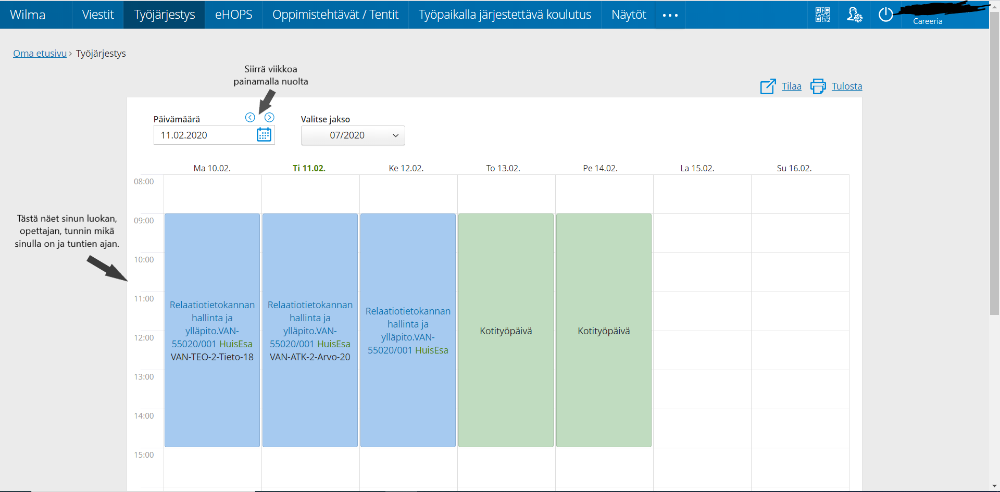

Wilma on oppilaitoksen hallinto-ohjelman www-liittymä.
Opiskelijat valitsevat Wilmassa kursseja, seuraavat suorituksiaan, lukevat tiedotteita ja viestivät opettajien kanssa.
Opettajat syöttävät Wilman kautta arvioinnit ja poissaolot, päivittävät henkilötietojaan ja viestivät opiskelijoiden ja huoltajien kanssa.
Kuva: https://www.lohja.fi/varhaiskasvatus-ja-opetus/opetus-ja-koulutus/perusopetus/kodin-ja-koulun-yhteistyo/wilma-kodin-ja-koulun-valisessa-viestinnassa/
Etusivulla näkyy yleiset asiat niinkuin: Viestit, työjärjestys, tiedotteet ja ilmoitukset.
Viestit sivulla näkyy saapuneet ja lähetetyt viestit. Sieltä voi myöskin lähettää uusia viestejä.
Työjärjestyksestä näkee mihin aikaan tunnit alkaa, milloin loppuu ja mistä löytää luokan. Työjärjestystä voi seurata vikkoja eteenpäin. Myös voit valita jakson ja sitä kautta katsoa tulevat oppitunnit.
Ensimmäisellä sivulla löytyy selvittämättömät merkinnät, toiselta sivulta näkee merkintä historian ja kolmannelta voi ilmottaa poissaoloista.